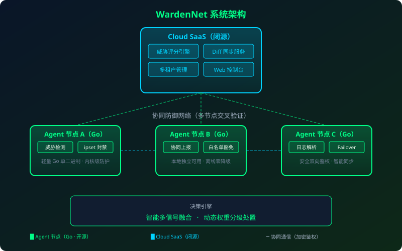
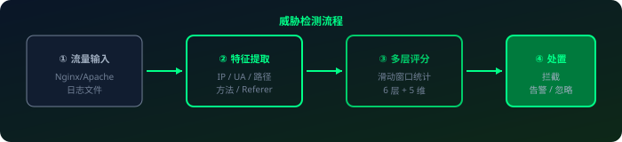

免责声明
WardenNet 专注于 Web 应用层威胁检测与 IP 封禁，不提供网络层带宽防护。SYN/UDP 洪水、带宽耗尽型 DDoS 攻击仍需依赖云厂商硬件清洗或高防 IP。
让每一台服务器都成为哨兵。开源分布式Web服务器攻击IP联防平台，
透明、协作、轻量、智能。
开源透明、轻量高效、协同联动的下一代 Web 防护方案
Agent 完全开源，单机永久免费使用。代码透明可审计，无隐藏后门风险。
多节点交叉验证，一台发现威胁全网受益。置信度分级，从根源杜绝误封传染。
6 层防御体系 + 5 维一致性评分模型，精准识别扫描器、爬虫和恶意攻击。
单文件 Go 二进制，超轻量、零运行时依赖。内核级 ipset/iptables 封禁，高性能。
覆盖目录扫描、漏洞探测、后门爆破、小流量 CC、集群打散型 CC 等常见攻击。
持续迭代更新，防御特征库动态扩展。开源社区反馈驱动产品优化。
开源 Agent + 闭源云端 SaaS，混合架构兼顾安全与协同

从零到防护生效，只需几分钟
# 克隆仓库并编译
cd agent
go build -o wardennet ./cmd/wardennet# 复制示例配置并修改
cp configs/wardennet.yaml.example config.yaml
# 关键配置示例
detector:
score_high: 50 # 触发本地拉黑候选的风险分阈值
sensitivity: medium # 灵敏度分档：high / medium / low
mode: block # block=直接封禁, report=仅观察
ipset:
whitelist:
- 127.0.0.1 # 本机回环
cloud:
enabled: false # 单机模式（true 时接入云端协同）# 直接运行或使用 systemd
sudo wardennet -config config.yaml
# 或使用 systemd 服务
sudo cp configs/wardenet.service /etc/systemd/system/
sudo wardennet
实时流量分析 → 多层评分 → 精准处置

明确能力边界，合规透明
识别自动化扫描器探测敏感路径（/.env、/admin、备份文件等）
检测 SQL 注入、XSS、命令执行等攻击 Payload 特征
识别后台登录暴力破解，智能区分正常管理操作
检测单 IP 小流量慢速攻击，集群打散型 CC 聚合识别
开源透明 vs 传统方案
| 特性 | 商业 WAF | 开源脚本 | WardenNet |
|---|---|---|---|
| 价格 | 昂贵（数千/月） | 免费 | 开源免费 + SaaS 增值 |
| 协同防御 | 无 | 单机孤岛 | 多节点交叉验证 |
| AI 评分引擎 | 有（黑盒） | 无 | 6 层防御 + 5 维评分 |
| 误报控制 | 一般 | 差（易误封） | 多层反误伤机制 |
| 资源占用 | 重（硬件/大 VM） | 轻量但粗糙 | 超轻量 Go 二进制 · 内核级 |
成熟稳定的技术选型
Agent 边缘节点，高性能单二进制部署
Cloud SaaS，现代化异步 API 服务
Web 控制台，现代化前端体验
内核级封禁，高性能无损耗
加入 WardenNet 社区，让每一台服务器都成为哨兵